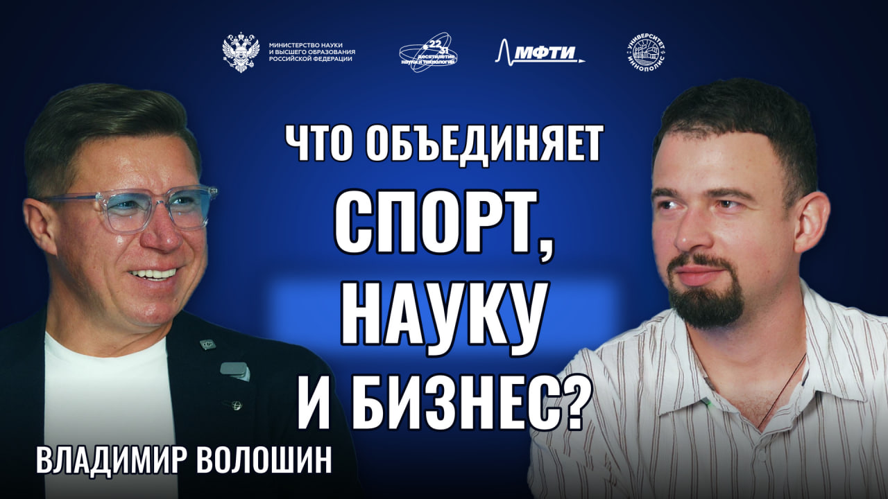

Владимир Волошин
Предприниматель, сооснователь IRONSTAR и ROSA RUN

01О герое
Владимир Волошин — предприниматель, спикер и наставник с более чем 30-летним опытом международного маркетинга. Сооснователь NEWMAN SPORT, IRONSTAR, ROSA RUN, Лиги марафонов BRICS, МойФитнес.РФ, EVENT DATA и сообщества PROбег. Развивает массовые спортивные события, сообщества и событийный туризм; сам участвует в ультратриатлонах и других соревнованиях на выносливость.
02Ключевые тезисы
- Спорт вошёл в жизнь Волошина благодаря семье. Совместные тренировки и соревнования помогают знакомиться с людьми, укреплять связи и открывать новые города.
- Учёным полезны предпринимательские навыки, а бизнесу — научный подход. Волошин рассказывает, как встреча исследователей и предпринимателей в стартап-академии помогает обеим сторонам увидеть возможности своих проектов.
- Наставники нужны на разных этапах жизни. Волошин вспоминает родителей, первых тренеров и людей из бизнеса, которые помогали ему развиваться и замечать свои сильные стороны.
- Посещение нейтринной лаборатории в Приэльбрусье стало для Волошина открытием. Разговор с исследователями показал ему масштаб работы, которой учёные посвящают десятилетия.
- Для развития научного туризма нужны понятные условия посещения и маршруты. Волошин сравнивает знакомство с наукой с вовлечением новичков в спорт, где доступная инфраструктура и сообщество помогают сделать первый шаг.
03Возьми с собой
Что применить
Найдите научный музей, лабораторию с экскурсионной программой или промышленный маршрут в своём регионе. Уточните условия посещения и подготовьте вопросы людям, которые там работают.
В этом выпуске
Спортивные сообщества, наставничество, нейтринная лаборатория в Приэльбрусье, промышленный туризм и сотрудничество учёных с предпринимателями.